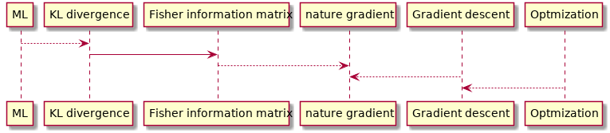

Natural Gradient
Table of Contents
I want to answer the following questions:
- why nature gradient
- what's the difference between nature gradient and Newton's method
- The connection between nature gradient and Fisher information matrix
Related topics:
- Gradient descent
- Newton's method
- ADAM
- Differential or Riemannian geometry
- KL divergence
- Fisher information

1 Why nature gradient
This is based on the paper of "Why nature gradient" 1
Remarks:
- Nature gradient is based upon Riemannian geometry
- Gradient descent method works well if:
- single minimum
- gradients are isotropic in magnitude with respect to any direction away from this minimum.
- Natural gradient adaptation provides isotropic convergence properties about any local minimum
Notion of distance
- Euclidean distance is defined as: \[ d_{E}(v, v + \delta v) = \sqrt{\delta v^{\top} \delta v} \]
More general non-Euclidean distance
\begin{align*} d_{W}(w, w + \delta w) &= \sqrt{ \sum_{i=1}^{N} \sum_{j=1}^N \delta w_i \delta w_j g_{i, j}(w)} \\ &= \sqrt{ \delta w^{\top} G(w) \delta w} \end{align*}where \(G(w)\) is a Rienmannian metric tensor, is an \((N \times N)\) positive-definite matrix whose \((i,j)\) th entry is \(g_{i, j}(w)\). The Riemannian metric tensor characterizes the intrinsic curvature of a particular manifold in N-dimensional space. In the case of the Euclidean coordinate system, \(G ( v ) = I\) is the identity matrix.
Note:
- a Rienmannian metric tensor is a function of \(w\) because it is not constant and changes with the vector \(w\).
- a Rienmannian metric tensor is always positive-definite, which is different from a Hessian matrix, which can be non-positive definite.
Riemannian Metrics Definitions2:
A Riemannian metric on a smooth manifold \(M\) is a 2-tensor field \(g \in T2(M)\) that is symmetric (i.e., \(g(X, Y ) = g(Y,X)\) ) and positive definite (i.e., \(g(X, X) > 0\) if \(X \ne 0\) ). A Riemannian metric thus determines an inner product on each tangent space \(T_p M\), which is typically written \(\langle X, Y \rangle := g(X, Y )\) for \(X, Y \in T_p M\) . A manifold together with a given Riemannian metric is called a Riemannian manifold.
Why we care about 'distance' The distance is related to the objective function or the loss function in optimization. For example, if the loss function is \[ L(v) = || v - v_0||_2^2 = (v_1 - c_1)^2 + (v_2 - c_2)^2 \], the distance is defined in the Euclidean space and vanilla gradient descent will work. If \[ L(w) = ||w - w_0||_2^2 = (w_1 \mathrm{cos}(w_2) - c_1)^2 + (w_1 \mathrm{sin}(w_2) - c_2)^2 \] the distance is defined in a polar coordinates and vanilla gradient descent may not work (check the paper for details). Instead, the nature gradient descent will still work.
In machine learning, the loss function is often defined in term of KL-divergence, and therefore, Fisher information matrix is natural choice since it is the Riemannian metric tensor 3.
how to determine \(G(w)\):
- When the nature of the manifold can be described in terms of a transformation of Euclidean orthogonal space with coordinate vector \(v\) to \(w\) , then one can determine the form of \(G(w)\) through the relationship \[ d_{E}^2(v, v + \delta v) = d_{W}^2(w, w + \delta w) \] where \(v\) is small and \(w + \delta w\) is the transformed value of \(v + \delta v\) . check out the example in this paper.
- when the transformation is unknown, we can do numerical approximation.
2 The difference between nature gradient and Newton's method
When the objective \(J(w)\) is a quadratic function of \(w\) , the Hessian \(F(w)\) is equal to \(G(w)\) for the underlying parameter space, and thus Newton's method and natural gradient adaptation are identical. In more general contexts, the two techniques are different. In particular, \(G(w)\) is always positive definite by construction, whereas \(F(w)\) may not be for particular choices and values of \(J(w)\) and \(w\) , respectively.
3 Fisher Information matrix
Fisher information (sometimes simply called information) is a way of measuring the amount of information that an observable random variable X carries about an unknown parameter θ of a distribution that models X.
Formally, it is the variance of the "score", or the expected value of the observed information.
It describes the probability that we observe a given outcome of X, given a known value of θ. If f is sharply peaked with respect to changes in θ, it is easy to indicate the “correct” value of θ from the data, or equivalently, that the data X provides a lot of information about the parameter θ. If the likelihood f is flat and spread-out, then it would take many samples of X to estimate the actual “true” value of θ that would be obtained using the entire population being sampled.
注： 如果用概率参数模型预测观察值出现的频率越高，越尖，说明这个概率模型越准确；而反过来，说明测量值提供的关于参数的信 息越多。
Formally, the partial derivative with respect to θ of the natural logarithm of the likelihood function is called the “score”. Under certain regularity conditions, if θ is the true parameter (i.e. X is actually distributed as f(X; θ)), it can be shown that the expected value (the first moment) of the score is 0:
The variance of the score is defined to be the Fisher information。
Fisher Information Matrix definition:
When there are N parameters, so that θ is an N × 1 vector \[ \theta =\begin{bmatrix} \theta_{1}, \theta _{2}, \dots ,\theta _{N} \end{bmatrix}^{\mathrm {T}} \]
then the Fisher information takes the form of an N × N matrix. This matrix is called the Fisher information matrix (FIM) and has typical element
\[ {{\bigl [}{\mathcal {I}}(\theta ){\bigr ]}}_{i,j} = \operatorname {E} \left[\left.\left({\frac {\partial }{\partial \theta _{i}}}\log f(X;\theta )\right)\left({\frac {\partial }{\partial \theta _{j}}}\log f(X;\theta )\right)\right|\theta \right] \]
The FIM is a N × N positive semidefinite matrix. If it is positive definite, then it defines a Riemannian metric on the N-dimensional parameter space. The information geometry uses this to connect Fisher information to differential geometry, and in that context, this metric is known as the Fisher information metric.
Footnotes:
Amari, Shun-ichi & Douglas, S.C.. (1998). Why natural gradient?. ICASSP, IEEE International Conference on Acoustics, Speech and Signal Processing - Proceedings. 2. 1213 - 1216 vol.2. 10.1109/ICASSP.1998.675489.
An elementary introduction to information geometry, https://arxiv.org/pdf/1808.08271.pdf